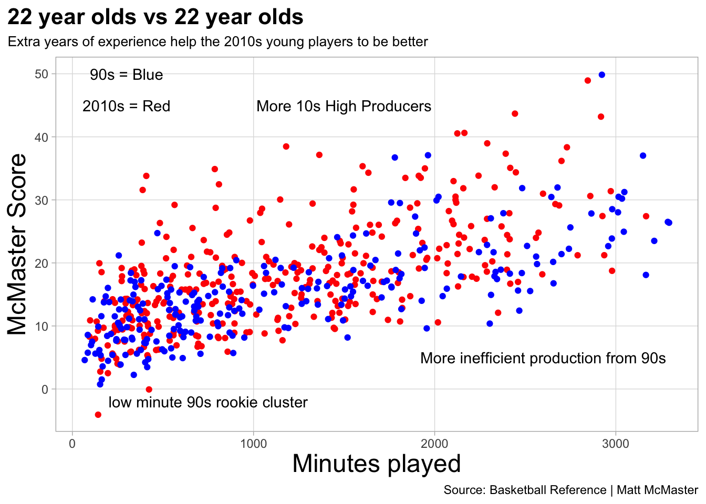

One of the most common terms in all of sports is the word “prime”. Prime represents the best years of a players career. To be at your prime is means to be at your best. The term is also used to evaluate players and their futures. Its used When teams try to decide whether or not to keep an older player whose past their prime or decide to hold onto a young player in hopes that they’ll improve and hit there prime.
A players prime is traditionally considered there late twentys and early thirties and then there is a decline in the late thirties. This understanding has never truly been argued with. But the NBA and there rules have changed that understanding. Back in the 1990s a traditionally a prospect entering the NBA draft played 3-4 years of college basketball. They were not so much drafted on potentil but drafted on production in college. Rookies were polished products ready expected to produce.
But attitudes and rules have changed. As the NBA style of play has become more skilled and isolation based the importance of potential skyrocketed. Prospects measurables and athletic ability became more important than their college production. Because of this top picks became younger and younger than years before.
So the question is has the mass wave of younger players entering the NBA changed when a players prime is?
To find this we’ll compare all players from the seasons 90-99 and 2012-2022. Each player is measured by something called a “McMasterScore”. The McMasterscore is found by this equation, McMasterScore = RBS/G * .05 + AST/G + PPG * TS% - TOV/G *2 + PER + DBPM + VORP. Essentially a McMasterscore values effecient scorers and defensive players. every player has been grouped by there age so each age has its own McMaster Score. By doing this we can find the prime age of NBA players and the different progressions between the 90s and 2010s. Quick thing to note, the 2010s first plotted line is at the age of 19 while the first plot for the 90s is at 22. The reason for this is because there were not an adequate enough 19, 20, and 21 year olds playing in the 90s to give an accurate number of their production
Code
library(tidyverse)library(rvest)library(cowplot)years <-1980:2022alladvanced <-tibble()for (i in years){url <-paste0("https://www.basketball-reference.com/leagues/NBA_", i, "_advanced.html")stats <- url %>%read_html() %>%html_nodes(xpath='//*[@id="advanced_stats"]') %>%html_table()stats <- stats[[1]] %>%select(-20, -25) %>%filter(Rk !="Rk") %>%mutate_at(6:27, as.numeric) %>%mutate(Rk=as.numeric(Rk), Age =as.numeric(Age)) %>%mutate(Season = i) %>%mutate(Player =gsub("\\*", "", Player))alladvanced <-bind_rows(alladvanced, stats)Sys.sleep(2)}years <-1980:2022allplayers <-tibble()for (i in years){url <-paste0("https://www.basketball-reference.com/leagues/NBA_", i, "_totals.html")stats <- url %>%read_html() %>%html_nodes(xpath='//*[@id="totals_stats"]') %>%html_table()stats <- stats[[1]] %>%filter(Rk !="Rk") %>%mutate_at(6:30, as.numeric) %>%mutate(Rk=as.numeric(Rk), Age =as.numeric(Age)) %>%mutate(Season = i) %>%mutate(Player =gsub("\\*", "", Player))allplayers <-bind_rows(allplayers, stats)Sys.sleep(2)}allplayersallmetrics <- allplayers %>%inner_join(alladvanced)Nineties <- allplayersallmetrics %>%filter(Season <2000& Season >=1990) %>%filter(G >20)TwentyTens <- allplayersallmetrics %>%filter(Season <2022& Season >=2012) %>%filter(G >20)TwentyTens <- allplayersallmetrics %>%filter(Season <2022& Season >=2012) %>%filter(G >20)Nineties <- allplayersallmetrics %>%filter(Season <2000& Season >=1990) %>%filter(G >20)TwentyTensPerG <- TwentyTens %>%mutate(ASTPergame = AST/G) %>%mutate(TOVPergame = TOV/G) %>%mutate(PPG = PTS/G) %>%mutate( RBSPergame = TRB/G)NinetiesPerG <- Nineties %>%mutate(ASTPergame = AST/G) %>%mutate(TOVPergame = TOV/G) %>%mutate(PPG = PTS/G) %>%mutate( RBSPergame = TRB/G) %>%mutate(TS= PTS/2*(FGA + .44* FTA))MMSCORE10s <- TwentyTensPerG %>%mutate(McMasterScore = RBSPergame *.05+ ASTPergame + PPG *`TS%`- TOVPergame *2+ PER + DBPM + VORP) %>%arrange(desc(McMasterScore))MMSCORE90s <-NinetiesPerG %>%mutate (McMasterScore = RBSPergame * .05+ ASTPergame + PPG *`TS%`- TOVPergame *2+ PER + DBPM + VORP) %>%arrange(desc(McMasterScore))MMCharts10 <- MMSCORE10s %>%group_by(Age) %>%summarise(AvgScore =mean(McMasterScore))MMCharts90 <- MMSCORE90s %>%filter(Age >21 ) %>%group_by(Age) %>%summarise(AvgScore =mean(McMasterScore))ggplot() +geom_line(data=MMCharts10, aes(x=Age, y=AvgScore), color="red") +geom_line(data=MMCharts90, aes(x=Age, y=AvgScore), color="blue") +labs(x="Age of Player", y="McMaster Score", title="2010s NBA players prime vs 90s players prime", subtitle="2010s reach their primes quicker and it last longer but their peaks are the exact same", caption="Source: Basketball Reference | Matt McMaster" ) +geom_text(aes(x=21.8, y=20.5, label="2010s rise faster"), color="red") +geom_text(aes(x=28, y=18.5, label="Peak of Primes"), color="blue") +geom_text(aes(x=28, y=17.7, label="are the same age"), color="red") +geom_text(aes(x=35.7, y=20.7, label="90s are better in early 30s"), color="Blue") +geom_text(aes(x=22, y=9, label="RED = 2010s"), color="red") +geom_text(aes(x=22, y=8, label="Blue = 90s"), color="blue") +theme_light() +theme(plot.title =element_text(size=16, face ="bold"), plot.subtitle =element_text(size=10),plot.title.position ="plot",axis.title =element_text(size=18),panel.grid.minor =element_blank() )
In the line chart below we see that players in the 2010s start better but both groups of players hit their prime at the excact same age. Not only are the primes the same but the average McMaster Score between the two are seperated by only .16.The curious thinga about this is proximity in prime score. The 2010s understandbly dominate the early years because they have a three year head start.They are better all the way up to there prime but the 90s jump nearly a fully point from the age of 27 to 28. The 2010s only improve by .295 in the same time frame.this could be because of contracts. Some draft busts or not as good players don’t get contract extensions or get let go for younger players or after 6 years of NBA experience players make big leaps from 27-28.
Second thing to look at it is the length of primes. Players in the 2010s hit an average score of 20 quicker and hold it longer than players in the 90s. players in the 2010s reach an average score of 20 when they hit the age of 25 and don’t go under 20 until they’re 31. Players in the 90s hit an average score of 20 for the first time when they’re 27 and go back under when they’re 30. This is most likely has to do with the headstart 2010s players get over 90s players.
The final thing to look at is the early 30s portion of the graph. he 90s leave there prime around the age of 30 but pop back up from their decline at the age of 32. from ages 32-34 90s players are better than 2010s. Most likely this is where starting at 19 and 20 opposed to 21 and 22 bites the 2010s in the butt. while they are better early most likely due to wear and tear on the body they aren’t to stay as consistent when they leave their primes comapred to 90s players.
So we see that the best season of an NBA player comes at the age of 28. Now lets see how best players at the prime age of 28 and see how they compare to one another.
Code
top10MS10 <- MMSCORE10s %>%filter(Age ==28) %>%arrange(desc(McMasterScore)) %>%top_n(10, wt=McMasterScore)top10MS90 <- MMSCORE90s %>%filter(Age ==28) %>%arrange(desc(McMasterScore)) %>%top_n(10, wt=McMasterScore)Chart10 <-ggplot() +geom_bar(data=top10MS10, aes(x=reorder(Player, McMasterScore), weight=McMasterScore)) +coord_flip()LBJ <- top10MS10 %>%filter(Player =="LeBron James")DR <- top10MS90 %>%filter(Player =="David Robinson")MA <- top10MS90 %>%filter(Player =="Michael Adams")PE <- top10MS90 %>%filter(Player =="Patrick Ewing")KI <- top10MS10 %>%filter(Player =="Kyrie Irving")Chart90 <-ggplot() +geom_bar(data=top10MS90, aes(x=reorder(Player, McMasterScore), weight=McMasterScore), fill ="lightsteelblue4") +geom_bar(data=DR, aes(x=reorder(Player, McMasterScore), weight=McMasterScore),fill="Gray54") +geom_bar(data=MA, aes(x=reorder(Player, McMasterScore), weight=McMasterScore), fill ="Yellow")+geom_bar(data=PE, aes(x=reorder(Player, McMasterScore), weight=McMasterScore),fill="DarkOrange2") +coord_flip() +labs(title="The Best of 90s vs the Best of the 2010s", subtitle ="Who's the best at age 28?.", x="", y="McMasterScore", caption ="") +theme_minimal() +theme(plot.title =element_text(size =16, face ="bold"),axis.title =element_text(size =8), plot.subtitle =element_text(size=10), panel.grid.minor =element_blank() )Chart10 <-ggplot() +geom_bar(data=top10MS10, aes(x=reorder(Player, McMasterScore), weight=McMasterScore), fill ="lightsteelblue4") +geom_bar(data=LBJ, aes(x=reorder(Player, McMasterScore), weight=McMasterScore), fill ="Purple") +geom_bar(data=KI, aes(x=reorder(Player, McMasterScore), weight=McMasterScore), fill ="Black") +coord_flip() +labs(title="", subtitle ="", x="", y="", caption ="") +theme_minimal() +theme(plot.title =element_text(size =16, face ="bold"),axis.title =element_text(size =8), plot.subtitle =element_text(size=10), panel.grid.minor =element_blank() )plot_grid(Chart90, Chart10)
Lebron James and David Robinson are the best players at 28. James has a score of 62.74 edging out Robinson whose score is 62.05. The bottom two scores are Kyre Irving and Patrick Ewing. irving smokes Ewing by a score 45.72 to 41.6. Overall the 90s top ten averages a score of 47.7 compared to the 2010s whose top ten’s average is 52.18. the 90s best at 28 is nearly 4.5 points below the best of the 2010s yet their overall average is less than .2 below the 2010s overall average. This could indicate that the depth of the 90s is stronger than the 2010s.
Side note, the player highlighted in yellow is Michael Adams. I had no clue who Mr.Adams was before this project and I owe him and apology. At the age of 28 in the 1990 season Michael Adams averaged 26.5 PPG 10 AST/G 3 RBS/G and had a TS% of 53. He’s the 7th best player at 28 in the 90s.
So the 2010s have a higher prime and there best players are better than the 90s. But how about the younger players? lets comapare the 22 year olds of 90s production to the 2010s.
Code
RookChart10 <- MMSCORE10s %>%filter(Age ==22) RookChart90 <- MMSCORE90s %>%filter(Age ==22) ggplot() +geom_point(data=RookChart10, aes(x=MP, y=McMasterScore),color ="Red") +geom_point(data=RookChart90, aes(x=MP, y=McMasterScore), color ="Blue") +labs (x="Minutes played", y="McMaster Score", title="22 year olds vs 22 year olds", subtitle="Extra years of experience help the 2010s young players to be better", caption="Source: Basketball Reference | Matt McMaster" ) +geom_text(aes(x=750, y=-2, label="low minute 90s rookie cluster"), color="black") +geom_text(aes(x=1500, y=45, label="More 10s High Producers"), color="black") +geom_text(aes(x=2700, y=5, label="But Best 10s = Best 90s"), color="black") +geom_text(aes(x=100, y=50, label="90s = Blue"), color="black") +geom_text(aes(x=100, y=45, label="2010s = Red"), color="black") +theme_light() +theme(plot.title =element_text(size=16, face ="bold"), plot.subtitle =element_text(size=10),plot.title.position ="plot",axis.title =element_text(size=18),panel.grid.minor =element_blank() )

Clearly there is a cluster of 90s players at the bottom. Thats because so many of them are rookies. Because most of the 22 years olds have been playing in the league for a 2 maybe 3 years before they’re 22 there are less of them in the low minute low production part of the graph. So there are more higher production 22 years olds in the 2010s than the 90s. Younger players are better now than 20-30 years ago. What this indicates is development through the league is more effective than becoming a more polished product in college
What’s incredible is that the last two charts have proved that younger players are better today than decades ago and the best now are better than the best then But at the end of the day both groups of players are there best at the same time and produce nearly the same. After looking at all the data I can conclude a couple of things. First the primes of NBA players are different. 2010s have there best years from 25-30. 90s players have there best years from 27-33. Secondly overall 2010s players are very very slightly better than 90s players. The 2010s score higher in nearly all years besides there mid 30s but not by to much. But the most curious thing is that the best year of NBA player is when they’re 28. Not only do they peak at the same time but the peak is basically the same. paths to the same treasure. But what can be concluded is that the early development of players has affected there production based on age and our perception of age when evaluating these players should change as well.